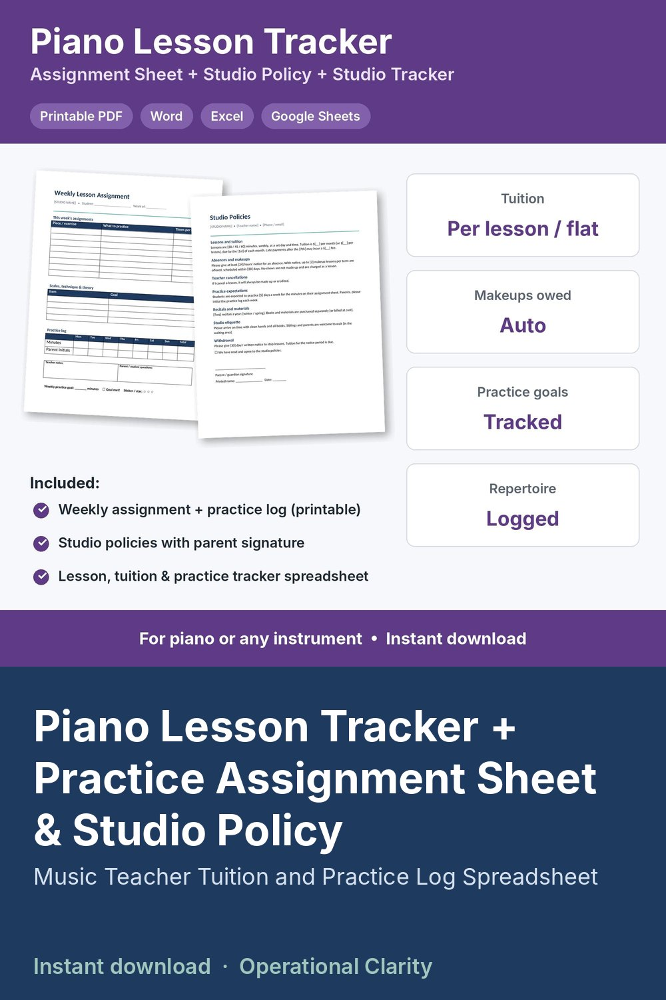

Piano Lesson Tracker + Practice Assignment Sheet & Studio Policy

PIANO LESSON TRACKER + PRACTICE ASSIGNMENT SHEET + STUDIO POLICY | Music Teacher Lesson, Tuition & Practice Spreadsheet | Printable PDF, Word, Excel & Google Sheets | Instant Download
For piano teachers (and any music teacher): a printable weekly assignment sheet for students, an editable studio policy, and a spreadsheet that tracks lessons, makeups, tuition, practice and repertoire.
PRINTABLES (PDF + editable Word)
• Weekly Lesson Assignment & Practice Sheet: pieces and what to practice, scales, technique and theory, daily practice minutes with parent initials, teacher notes, weekly goal and stars
• Studio Policies: lessons and tuition, absences and makeups, teacher cancellations, practice expectations, recitals and materials, etiquette, withdrawal, parent signature
STUDIO TRACKER (Excel / Google Sheets)
• Rates: 30, 45 and 60 minute lessons, per lesson or monthly flat tuition, makeup limit per term
• Students: parent contact, lesson length, billing type, day and time, weekly practice goal, level or book. Absences, makeups given and MAKEUPS OWED calculate automatically.
• Lesson log: attended, makeup, absent with notice, no-show or teacher cancel, plus the week's assignment
• Tuition: pick a month to see each family's amount due (per lesson or flat), paid and balance
• Practice: daily minutes per week vs each student's goal
• Repertoire: every piece with status from Learning to Performed
• Dashboard: tuition due and owed, lessons taught, makeups owed, no-shows, practice goals met
WHAT YOU GET
• Weekly Lesson Assignment & Practice Sheet (PDF + Word)
• Studio Policies (PDF + Word)
• Piano Studio Lesson, Tuition & Practice Tracker (.xlsx)
• Start Here guide (PDF)
GOOD TO KNOW
• Digital download. No physical item will be shipped.
• Works for piano, guitar, violin, voice or any instrument.
• For use in your own studio. No reselling or sharing of the files.